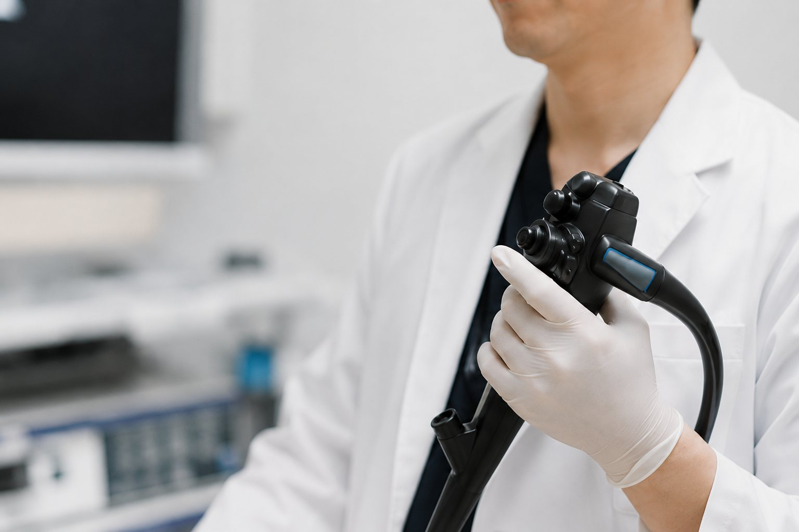

内視鏡・消化器の検査
- 胃カメラ
- 経口・経鼻に対応し、ご希望や状態に応じて鎮静剤を使用した検査も行います。
- 大腸カメラ
- 予約状況により、専門性を持つ近隣の医療機関をご紹介する場合があります。
- ピロリ菌検査
- 胃の状態やこれまでの検査歴を確認し、必要に応じて行います。
- 便潜血検査
- 便に血液が混じっていないかを調べ、大腸がん検診にも用います。
Services
お腹の不調やがんが心配な症状、胃カメラ、佐世保市の検診・健診、生活習慣病まで。消化器の専門医が、からだのことをまとめて診療します。
Examinations
症状や健診結果に応じて、必要な検査を組み合わせて行います。院内で対応できないCT・MRIや専門的な検査、入院治療が必要な場合は、地域の医療機関へ速やかにご紹介します。
Abdominal Ultrasound
腹部超音波検査は、放射線被ばくがなく、肝臓、胆のう、胆管、膵臓、腎臓などの状態を観察できる検査です。当院では新しい超音波診断装置を導入し、通常の腹部観察に加え、脂肪肝や慢性肝疾患の評価にも活用しています。
肝臓、胆のう、胆管、膵臓などの腫瘍性病変が疑われる場合や、胆石、胆のう炎、膵炎、虫垂炎など、腹痛の原因となる疾患が疑われる場合にも、診察所見と組み合わせて必要に応じて行います。
超音波検査は、体格や腸管ガスなどの影響により、十分に観察できないことがあります。CTやMRIなどの追加検査が必要と判断した場合は、佐世保市総合医療センターや佐世保中央病院をはじめとする地域の基幹病院、専門性を持つ近隣の医療機関へご紹介します。
「お腹が痛い」「体重が減ってきた」「血便が出た」「便通が変わった」「胸やけや胃もたれが続く」——こうした症状の裏に、がんなどの病気が隠れていないかを見きわめることは、消化器内科のもっとも大切な役割だと考えています。少しでも不安のある方は、どうぞ我慢せずにご相談ください。
専門医が症状やこれまでの経過をていねいにうかがったうえで、必要な検査を無理なく進めます。「大げさかな」とためらう必要はありません。心配なところが見つからないと分かること、それ自体が何よりの安心につながります。気になる症状こそ、早めの受診をおすすめします。
経験豊富な医師による、できるだけ苦痛の少ない胃カメラ（上部消化管内視鏡検査）を行っています。経口・経鼻に対応し、ご希望の方には鎮静剤を使った、うとうとした状態での検査も可能です。胃の不調が続く方、健診で指摘された方、ピロリ菌が気になる方は、お気軽にご相談ください。佐世保市の胃がん検診も、当院の胃カメラで受けられます。
大腸カメラ（大腸内視鏡検査）も実施していますが、現在ご予約が大変混み合っております。お急ぎの場合やご予約の状況によっては、連携する近隣の医療機関をご紹介させていただくことがあります。

当院は佐世保市の検診実施医療機関です。特定健診・高齢者健診と、胃がん・大腸がん・肺がん検診を、まとめて当院で受けられます。市の補助が受けられますので、年に1回、からだの点検をぜひ習慣にしましょう。
| 検診 | 検査内容 | 30〜69歳 | 70歳以上 |
|---|---|---|---|
| 胃がん検診（胃カメラ）30歳から | 胃内視鏡 | 3,000円 | 1,500円 |
| 大腸がん検診40歳から | 便潜血検査（2日法） | 1,000円 | 500円 |
| 肺がん検診40歳から | 胸部X線 | 800円 | 400円 |
特定健診（40〜74歳）・後期高齢者健診にも対応しており、がん検診と同じ日にまとめて受けることができます。がん検診は受診券不要で、マイナ保険証または資格確認書をお持ちください。特定健診・後期高齢者健診は、受診券とマイナ保険証または資格確認書をお持ちのうえ、お電話でご予約ください。
※料金・対象は佐世保市の令和8年度のご案内に基づきます。年度により変わる場合がありますので、最新の情報は佐世保市のご案内、またはお電話でご確認ください。
高血圧・脂質異常症・糖尿病などの生活習慣病を、数多く診療しています。健診で「血圧が高い」「コレステロールが高い」「血糖値が高い」と言われた方、肝機能の異常を指摘された方、バリウム検査でひっかかった方——結果票を持って、まずはご相談ください。
生活習慣病は、脂肪肝や肝機能障害、さらには胃がん・大腸がんのリスクとも深く関わっています。だからこそ、消化器の専門医が、胃カメラなどおなかの状態まで含めて一貫して管理できることが当院の強みです。「生活習慣病はあの病院、胃腸はこの病院」と分けずに、まとめてお任せください。
治療は最新のガイドラインに沿った適切な医療を心がけつつ、お仕事や食生活など、お一人おひとりの暮らしに合わせた無理のない方法をご提案します。
当院はワクチン接種に力を入れています。インフルエンザ、新型コロナ、帯状疱疹などの各種ワクチンに対応。帯状疱疹ワクチンは2種類をご用意しており、それぞれの特徴をご説明したうえで、ご希望に合わせてお選びいただけます。
接種はお電話でのご予約をお願いします。市の助成制度が使える場合もありますので、対象かどうか分からない方もお気軽にお尋ねください。
発熱やかぜ症状の診療も行っていますが、当院にはご高齢の患者さんも多く通院されています。院内での感染を防ぐため、次の点にご協力をお願いいたします。
地域の基幹病院と、日頃から綿密に連携しています。緊急性のある疾患や、入院・手術・高度な検査が必要な場合は、ためらわずすみやかにご紹介します。
特に力を入れているのが、胃がん・大腸がんなど消化器のがんの早期発見です。検診や精密検査から、基幹病院での治療、そして治療後のフォローまで、切れ目なくお付き合いします。10年、20年と安心して通っていただける「かかりつけ医」として、皆様の健康維持のお手伝いをいたします。